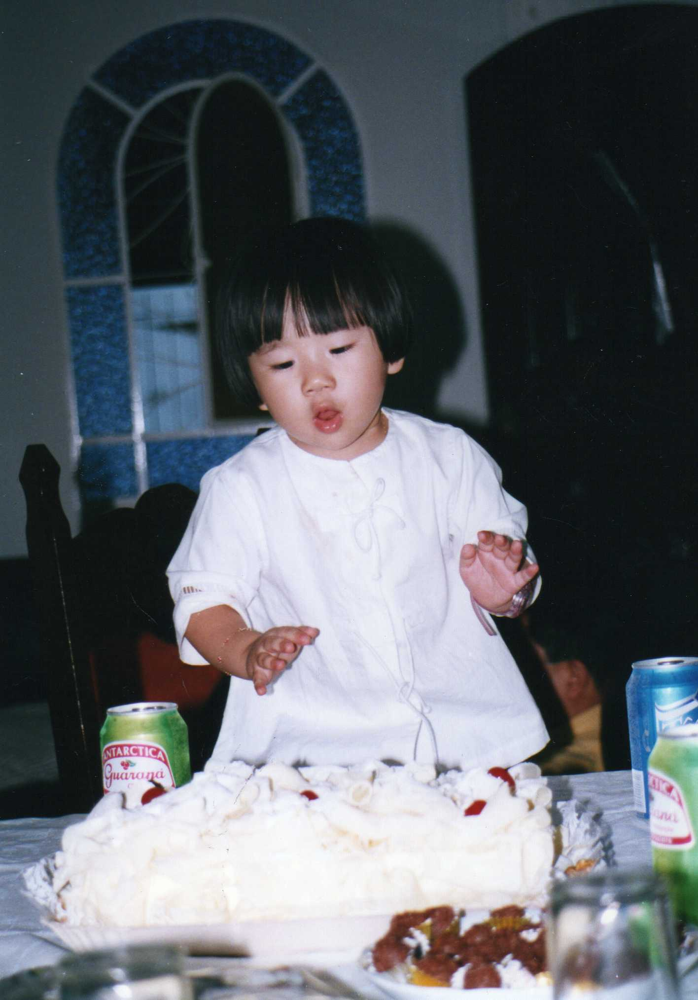
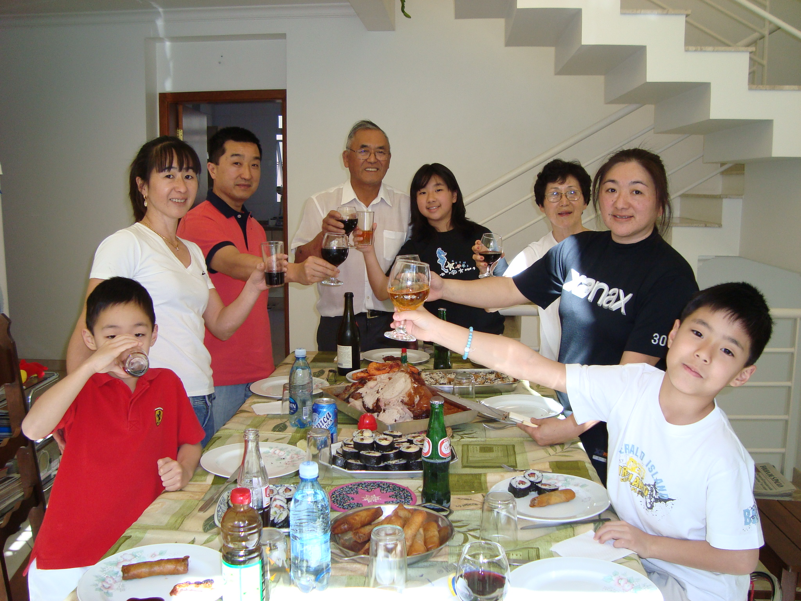
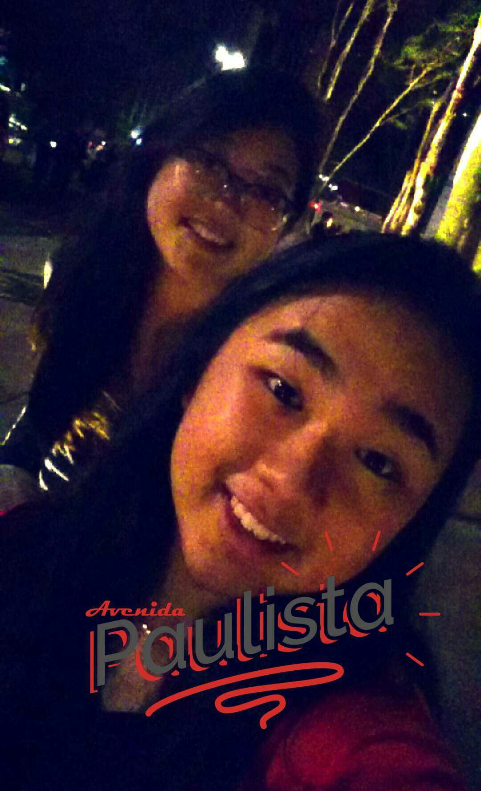

Do nascimento até os dias de hoje

Nascida em São Paulo, no dia 28 de dezembro de 1998 ( e para os loucos por signos ativos, às 15:02). Morei nessa cidade que nunca dorme por
12 anos, me revesando entre colegio, casa, academia, parque e a casa da tia.
Estudei até o sexto ano no Colégio Albert Sabin, no Parque dos
Principes, mas nunca fui uma aluna muito excepcional(~hehe~), mas tive oportunidade de testar vários tipos de esportes das mais variadas categorias,
alguns que atualmente até fazem parte dos meus hobbies favoritos.
 Apesar de ser filha única e não ter conhecido meu pai, nunca me faltou nada. Minha familia é bem unida, então desde pequena sempre estive acompanhada
pelos meus primos e tios, todos sempre se ajudando em tudo que dá (claro que tem aquelas briguinhas né, mas quem nunca?).
Apesar de ser filha única e não ter conhecido meu pai, nunca me faltou nada. Minha familia é bem unida, então desde pequena sempre estive acompanhada
pelos meus primos e tios, todos sempre se ajudando em tudo que dá (claro que tem aquelas briguinhas né, mas quem nunca?).
Por esse motivo e muitos outros
sou muito apegada a familia e considero ela a minha base para tudo, sendo muito grata por tê-la e esta ser do jeito que é, sendo minha mãe o pilar desta e
para mim um exemplo de de mulher guerreira.

Em 2010, por conta dos meus avós já estarem ficando muito velhos, eu e minha mãe nos mudamos para a casa deles a fim de cuidar melhor dos mesmos. Fomos para
Vargem Grande Paulista, uma cidade semi-interiorana com cerca de 48 mil habitantes (e que até hoje não conheço ninguém que nasceu de fato nela).
Apesar de ser
somente 30 minutos do centro de São Paulo, escolhemos por mudar de escola e com isso passei a estudar na Escola Aurora ( que não tem nada a ver com a marca de
linguiça), onde concluí meu ensino fundamental e médio.

Pela qualidade do ensino oferecido na nova escola, acabei não passando direto do ensino médio para a faculdade, o que me levou a escolher a
fazer um ano de cursinho. Depois de muito procurar, decidi que a melhor escolha (e a melhor bolsa) era a do Etapa, porém devido a distância, acreditava
que meu rendimento poderia ser comprometido. Convenci minha mãe que o melhor seria eu morar perto do cursinho, e assim eu fomos, até que encontramos uma
kitnet próxima ao metrô.
Então, em 2016, voltei a morar na minha amada São Paulo, porém dessa vez totalmente sozinha. O cursinho me acrescentou muito
não somente em conteúdo escolar mas também como pessoa, tive a oportunidade de criar amizades incríveis que me ajudaram a enfrentar a pressão que é o cursinho, se preparando
um ano inteiro somente para algumas poucas provas, onde a "reprova" significa mais um ano vendo a mesma matéria de ensino médio e mais uma vez a sociedade te julgando.
E no final de um longo ano de cursinho, tive a notícia que havia passado na FODÁSTICA UNESP BAURU. Apesar de ter entrado meio de para-quedas do curso, tenho gostado muito
de tudo que tenho aprendido e a imensa possibilidade de áreas que posteriormente posso ir. Tendo enormes expectativas para esses 3 anos (espero que não mais que isso) seguintes
que estão por vir.